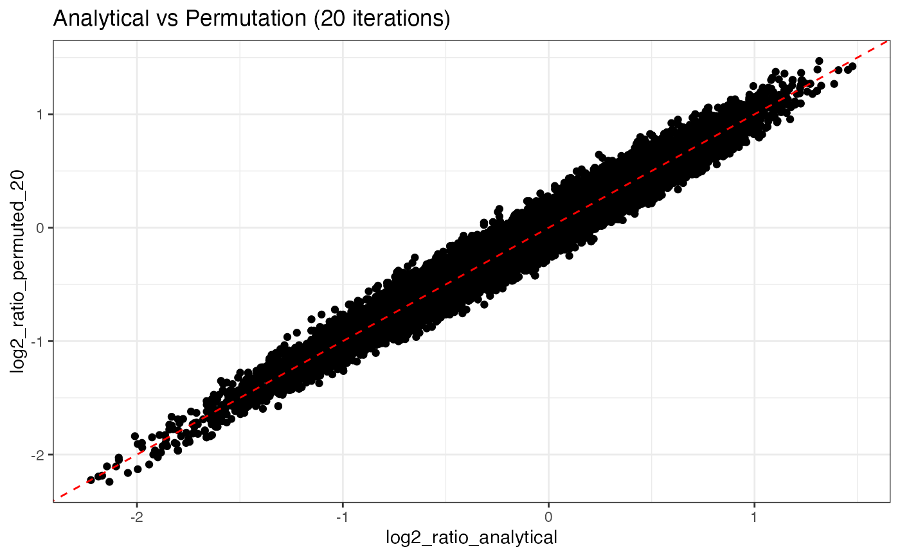
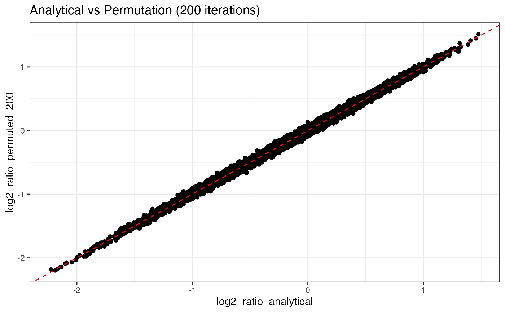

Compute local proximity scores
local_proximity.RdThis function computes a local proximity score for each node based on the specified markers, using a simple neighborhood count based statistic. The score is computed as the log2 ratio of the observed local proximity statistic to the expected proximity statistic, where the expected statistic is computed based on the analytical formula or from a null model of random sampling. See details about the method in the section below.
Arguments
- object
A
CellGraphobject containing the cell graph and counts.- markers
A character vector specifying the markers to use for the local proximity score.
- method
A character string specifying the method to use for computing the local proximity score. Options are "analytical" or "permutation". "analytical" is generally preferred as it is much faster. The "permutation" should converge to the analytical solution as the number of iterations increases.
- mode
A character string specifying the mode of computation. "all" will compute a joint proximity score for all selected markers. "self-clustering" will compute a proximity score for each marker independently. The latter option is only available for the "analytical" method which is significantly faster than "permutation". With option "any", the local statistics are aggregated for
markers. In other words, the score will measure enrichment of any of themarkers.- iterations
An integer specifying the number of iterations to run.
- k
An integer specifying the neighborhood size to consider. The minimum allowed value is 2. A neighborhood size of 3 or 4 is generally recommended. Note that increasing
klowers the spatial resolution of the score, but can help detecting weaker proximity patterns in larger regions of the graph.- A_k
An optional pre-computed expanded adjacency matrix (reachability matrix) for neighborhood size
k.- seed
An integer for random seed setting.
- ...
Additional parameters
Local Neighborhood Enrichment (LNE)
The local proximity statistic is defined by the UMI counts for the set of
markers within a neighborhood of size k around each node. The statistic
comes in two flavors depending on the mode:
all: As in "all
markersmust be present".any: As in "any marker in
markerscan be present".
The neighborhood around a node reaches out to its k nearest neighbors,
meaning that the maximum possible distance between any two nodes in the
neighborhood is 2*k edges.
The observed statistic is calculated as either:
all: $$O_{i,m} = min(x_{i,m})$$ any: $$O_{i,m} = sum(x_{i,m})$$
where \(x_{i,m}\) is the vector of UMI counts for the selected markers
\(m\) in the neighborhood of node \(i\).
The first mode (all) is the default and computes the minimum UMI count
for markers in the neighborhood. This is used when all markers need
be present in the neighborhood and is useful for identifying colocation
of an entire set (module) of markers.
The second mode (any) computes the sum of UMI counts for markers
in the neighborhood. This is useful when the presence of any marker
is sufficient to define clustering. For instance, if we want to detect
a region where at least one of the markers is present.
Analytical formula for the expected value (\(E_{i,m}\)) of the local proximity statistic for a single node \(i\) and markers \(m\) is given by:
all: $$E_{i,m} = min(f_{umi1} \in M_{umi1}) \times N_{umi1}(i) + min(f_{umi2} \in M_{umi2}) \times N_{umi2}(i)$$ any: $$E_{i,m} = sum(f_{umi1} \in M_{umi1}) \times N_{umi1}(i) + sum(f_{umi2} \in M_{umi2}) \times N_{umi2}(i)$$
where \(M_{umi1}\), \(M_{umi2}\) are the sets of marker frequencies for the selected
markers for node types umi1 and umi2. The two node types (umi1/umi2) in a PNA graph
can have different marker frequencies and are therefore treated separately in the calculation.
\(N_{umi1}(i)\), \(N_{umi2}(i)\) are the neighborhood sizes for the two node types
for node \(i\).
The local proximity score for node \(i\) is then computed as: $$LNE_{i,m} = log2(\frac{O_{i,m}+k-1}{E_{i,m}+k-1})$$
where \(k-1\) is a pseudocount used to flatten weak signals.
A higher k will result in a more global proximity score, while a
lower k will result in a more local proximity score. Hence, k determines
the "spatial resolution".
markers can include any number of protein IDs:
A single marker: local clustering
Two markers: local proximity
Three or more markers: local proximity for multiple markers
Note that the score measures colocation of the specified markers. Higher values indicate that the markers appear together more frequently than expected, but it does not imply that they are spatially clustered together. For example, protein A might be polarized while protein B is uniformly distributed, resulting in high local proximity scores for A/B in the polarized region.
Examples
library(ggplot2)
library(dplyr)
library(tibble)
se <- ReadPNA_Seurat(minimal_pna_pxl_file()) %>%
LoadCellGraphs(cells = colnames(.)[2], add_layouts = TRUE)
#> ✔ Created a <Seurat> object with 5 cells and 158 targeted surface proteins
#> ℹ Fetching edgelists for 1 cells
#> → Creating <CellGraph> objects
#> → Fetching marker counts
#> → Adding marker counts to <CellGraph> object(s)
#> → Fetching layouts
#> → Adding layouts to <CellGraph> object(s)
#> ✔ Successfully loaded 1 <CellGraph> object(s).
cg <- CellGraphs(se)[[2]]
# Compute local scores using analytical method
log2_ratio_analytical <- local_proximity(
object = cg,
markers = "B2M"
)
# Compute local scores using permutation method
log2_ratio_permuted_20 <- local_proximity(
object = cg,
markers = "B2M",
method = "permutation",
iterations = 20
)
log2_ratio_permuted_200 <- local_proximity(
object = cg,
markers = "B2M",
method = "permutation",
iterations = 2e2
)
gg <- tibble(
log2_ratio_analytical = log2_ratio_analytical,
log2_ratio_permuted_20 = log2_ratio_permuted_20,
log2_ratio_permuted_200 = log2_ratio_permuted_200
)
p1 <- ggplot(gg, aes(log2_ratio_analytical, log2_ratio_permuted_20)) +
geom_point() +
ggtitle("Analytical vs Permutation (20 iterations)") +
theme_bw() +
geom_abline(linetype = "dashed", color = "red")
p2 <- ggplot(gg, aes(log2_ratio_analytical, log2_ratio_permuted_200)) +
geom_point() +
ggtitle("Analytical vs Permutation (200 iterations)") +
theme_bw() +
geom_abline(linetype = "dashed", color = "red")
# Permutation method converges to analytical with many iterations;
# however, the permutation method relies on fewer assumptions and
# is generally safer
p1

p2
